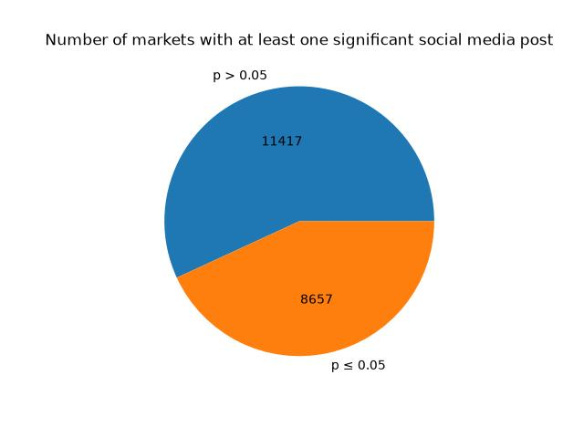
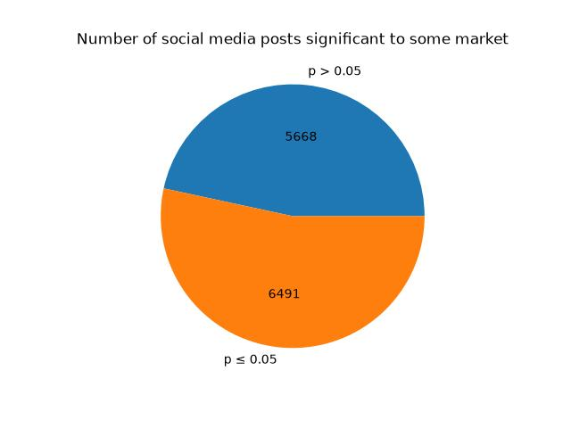

Results
Our analysis shows that for some topics Trump's social media posts are followed by significant market movements. With an especially prominent example being bets related to the Russia-Ukraine war, or the actions of (in-)directly involved high profile people.
However, compared to the total volume of Trump's social media posts these remain a minority.
Meta Analysis
These statistics are a side product of the analysis and help to contextualise the correlation graphs.
Since the same tweet may be applicable to multiple markets the following graphs show the lowest recorded p values split by significance threshold 0.05 for each tweet and each market separately.
 |
 |